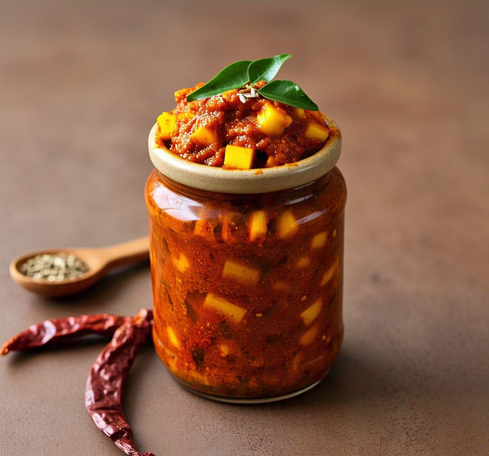
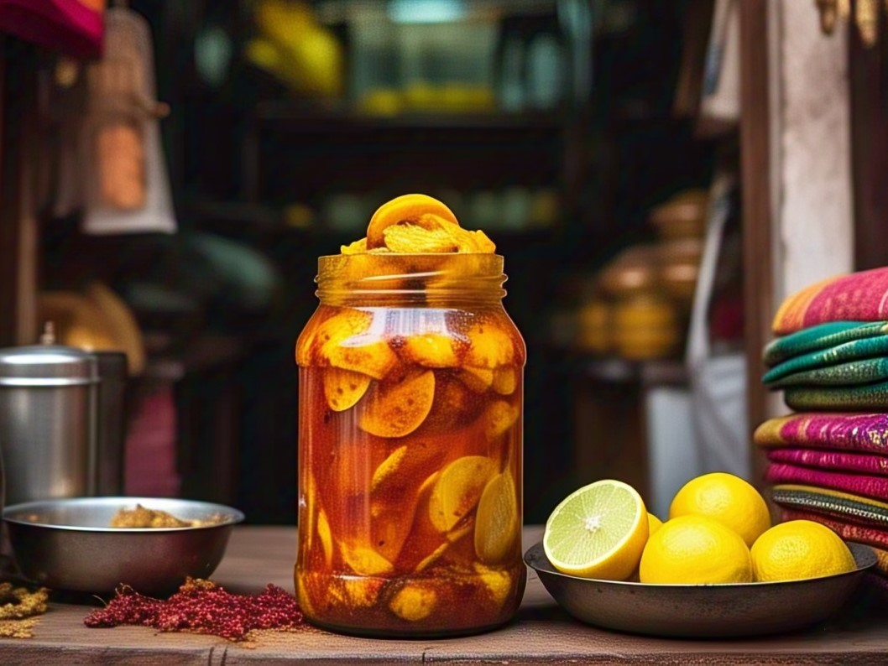

Enjoy Various types of Pickles
Spicy Mango Pickle
Ingredients:
- 4 raw mangoes (chopped)
- 1/4 cup salt
- 2 tbsp turmeric powder
- 2 tbsp red chili powder
- 2 tbsp mustard seeds (coarsely ground)
- 1 tbsp fennel seeds
- 1 tbsp fenugreek seeds
- 1 tbsp nigella seeds (kalonji)
- 1/2 tbsp asafoetida (hing)
- 1/2 cup mustard oil

Recipe:
- Marinate Mangoes: Combine chopped mangoes with turmeric and salt. Allow to sit for 1-2 days to become soft and loosen water. Drain the water.
- Prepare Spice Mix: Dry roast mustard, fennel, fenugreek, and nigella seeds lightly, then grind coarsely.
- Mix It Up: Combine the spice mix, chili powder, and hing with the mangoes.
- Heat Oil: Heat mustard oil until it smokes, then let cool a bit. Pour over the mango mixture and mix well.
- Store: Store in a glass container in sunlight for 5-7 days, shaking every few days.
Tangy Lemon Pickle
Ingredients:
- 6-8 lemons (quartered)
- 1/4 cup salt
- 2 tbsp turmeric powder
- 1 tbsp red chili powder
- 1 tbsp roasted cumin powder
- 1/2 tbsp black pepper powder
- 1/2 tbsp sugar (optional, for balance)
- 1/2 cup mustard oil

Recipe:
- Salt Cure: Mix lemon pieces with salt and turmeric.
- Spice Mix: Add chili powder, cumin, black pepper, and sugar.
- Heat Oil: Heat mustard oil till smoky, cool, and pour over the mixture.
- Mature: Store for 7-10 days until flavors develop.
- Store: Let sit in a jar for 10 days, shaking daily until the lemons soften.